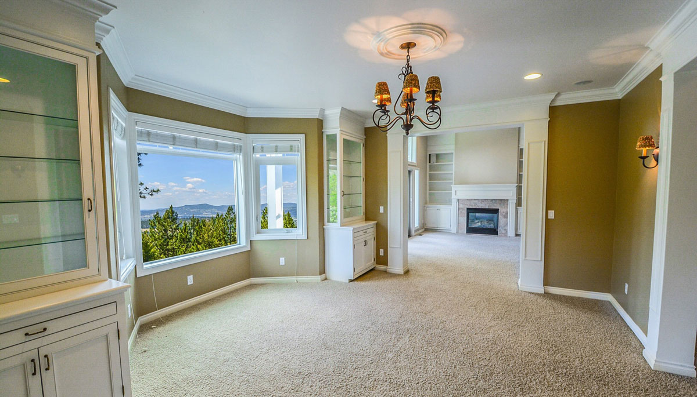

This week I was introduced to many new GitHub commands and Intelliji. Before taking this software engineering class I was used to VSCode. I thought VSCode was the best IDE to use but Intelliji is really good. At first, it took a lot of practice and getting used to but the UI and the framework are fairly simple to use and it didn’t take too much time to get used to. I was originally worried and lost when I first started. It’s like being thrown into the water and learning how to swim or moving into a new house and learning where each room is. Sure it was shocking at first but once I got used to it I learned to adapt and eventually learned to appreciate it.
ESLint was surprisingly good at finding mistakes or improving your code. It is basically the spellchecker of coding. There were many times when I wasn’t really paying attention to my codebase and ESLint fixed the mistakes and errors for me. Not even VSCode was able to assist me this much. I do find the warning and check marks annoying and even unnecessary at times but I do think that it is important and I find them useful. After fixing all of my mistakes my codebase looks a lot better.
I was also shown a new and more efficient way of Github in my early programming class. I was taught how to use Github but we ran the git commands in the terminal. So git clone, git status, git add, git commit, and git push were all the commands we needed to use to clone and push our repo. The most annoying and irritating part of cloning into a terminal is that we have to log in and insert our personal token. This takes too much time and is very tedious. I was taught a new way of cloning and pushing our changes and that is through GitHub Desktop. It is like magic and takes way less time. I was surprised that with the click of a few buttons I have already cloned and pushed my repo. This is definitely a useful skill that I will use throughout the future.
After using Intellij for a week I definitely prefer using Intellij for Javascript or web design applications. However, I will probably still use VSCode for C/C++ and maybe Python if I ever get to learn it. I don’t think I will be using VSCode for the time being just because I want to devote my time to Javascript and this class. One thing I like about VSCode is that since more people use it there are more extensions for it and more users to consult with. IntelliJ cost money so there is a smaller user base. One thing I hate about VSCode is running the code because a lot of times you have to set up VSCode with Mingw64 on windows or Xcode on the mac which is a hassle and sometimes the code won’t run well on a terminal. There were many times that my code didn’t even run on the terminal and I had to use an online code compiler to execute it. So far in Inteliji I have not run into this problem everything runs smoothly and well.
As software engineers good coding standards are essential we want to make sure that the code is reasonable and that we can detect or avoid mistakes. Using great tools such as a good IDE like IntelliJ is essential since it can ensure quality code. The hard part is there are many tools and it is our job to learn as much as we can so that we can find the right tools. Also, since technology is changing fast, especially in the software we need to be up to date.